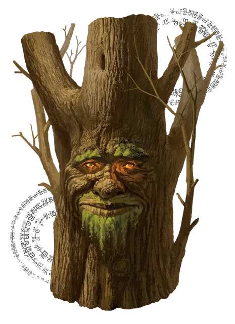

Лифферлас
Lifferlas
Огромное Растение, без мировоззрения, именной НИП

Класс Доспеха 13 (природный доспех)
Хиты 59 (7к12 + 14)
| мод | спас | ||
|---|---|---|---|
| СИЛ | 19 | +4 | +4 |
| ЛОВ | 6 | −2 | −2 |
| ТЕЛ | 15 | +2 | +2 |
| мод | спас | ||
|---|---|---|---|
| ИНТ | 10 | +0 | +0 |
| МДР | 10 | +0 | +0 |
| ХАР | 7 | −2 | −2 |
Уязвимость к урону огонь
Сопротивление урону дробящий, колющий
Чувства пассивное Восприятие 10
Языки Общий
Опасность —
Особенности
Обманчивая внешность. Пока Лифферлас остаётся неподвижным, его невозможно отличить от обычного дерева.
Информация для отыгрыша. Друид Изумрудного Анклава, пробудил заклинанием древо Лифферлас. Золотые Поля - его дом, здешний люд - его друзья. Дети любят вырезать свои имена и инициалы на его стволе и лазать по его ветвям, что радует его.
Идеал. : «Я живу для того, чтобы защищать народ и растения Золотых Полей.»
Привязанность. : «Дети - это чудесно. Я сделаю все, что угодно, чтобы они чувствовали себя счастливыми и в безопасности»
Слабость. : «Я плохо помню имена людей и часто их путаю.»
Действия
Мультиатака. Лифферлас совершает две атаки ударом.
Удар. . Рукопашная атака оружием:+6 к попаданию, досягаемость 5 фт., одна цель. Попадание: 14 (3к6+4) дробящего урона.